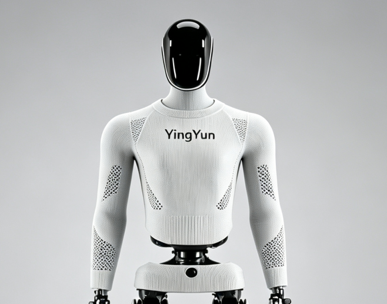

Roboskin · Custom Knitted Robot Soft Skin
Engineered from robot geometry for a close-fitting, breathable and serviceable functional shell, with optional conductive-yarn sensing integration.
Image-, sample- and 3D-data-based customization available for irregular exoskeletons, moving joints and sensor interfaces.

Industrial Protective Apparel
Abrasion-resistant, stain-repellent, oil-resistant and flame-retardant protection for factory, inspection and hazardous-operation robots.

Tactile Sensing E-Skin
Integrated conductive yarns and algorithms give robots pressure sensing and contact-feedback capabilities.

Robot Active-Wear Set
Stretchy, breathable knitted apparel for sports demonstrations, robot competitions and outdoor scenarios.

Outdoor Functional Series
Water-repellent, stain-resistant and durable functional yarn systems for inspection, delivery and outdoor-operation robots.